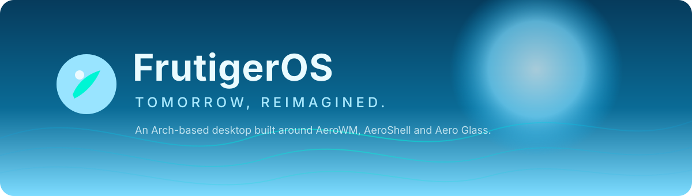

Documentation
Everything you need to build, run and contribute to FrutigerOS — an Arch Linux desktop built around a Rust Wayland compositor.
Getting started
Clone the repository, install build dependencies and run the test suite.
AeroWM
The Smithay-based compositor: workspaces, focus, pointer input and panels.
AeroShell
The glass panel, AeroStart launcher and notification pipeline.
Installation
Build the archiso profile and run the installer in dry-run mode.
What is FrutigerOS?
FrutigerOS is an open-source Linux distribution that takes the glossy, nature-inspired optimism of the late-2000s Frutiger Aero aesthetic and builds it properly on a modern foundation: Arch Linux, Wayland and Rust.
It is not a theme pack. The desktop is composed of first-party software: AeroWM (compositor), AeroShell (panel and shell services), AeroInstaller, and nine native applications.
Project status
| Component | State | Verified by |
|---|---|---|
| AeroWM | In progress | 23 unit tests, cargo check |
| AeroShell | In progress | 23 unit tests, panel renderer |
| AeroInstaller | In progress | 18 unit tests, dry-run CLI |
| Aero Apps | In progress | 32 unit tests across 9 crates |
| ISO profile | In progress | build.sh --check |
| Documentation | This site | Static HTML/CSS/JS |
| Public alpha | Blocked | Needs packaged ISO + QEMU run |
Design principles
- Own the stack. Compositor, shell and apps are first-party code, not a themed GNOME or KDE session.
- Honest engineering. A feature is “done” only when it runs and has a test or a reproducible check.
- Accessible by default. Contrast, reduced motion, keyboard navigation and screen-reader labels are requirements.
- No proprietary store. Packages come from Arch repositories and the FrutigerOS repository.